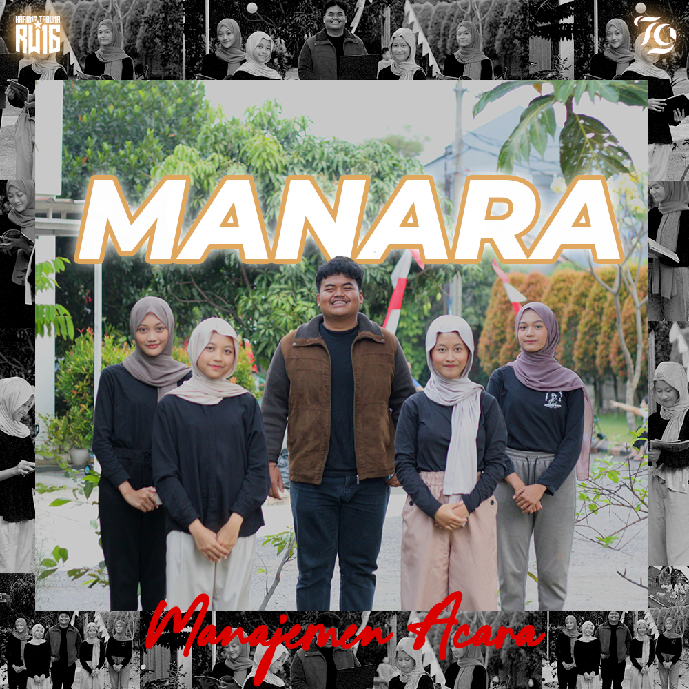

Work
Kumpulan karya digital BLEKJAN yang mencerminkan eksplorasi visual dan pendekatan kreatif dalam berbagai bentuk media.
Fotografi
Visual storytelling melalui kamera: menangkap momen dan suasana.


Videografi
Cuplikan event, dokumenter, dan karya naratif pendek.


Desain Grafis
Ilustrasi digital, poster, dan layout visual untuk berbagai kebutuhan.


Desain UI/UX
Antarmuka pengguna aplikasi dan website yang fungsional dan estetik.